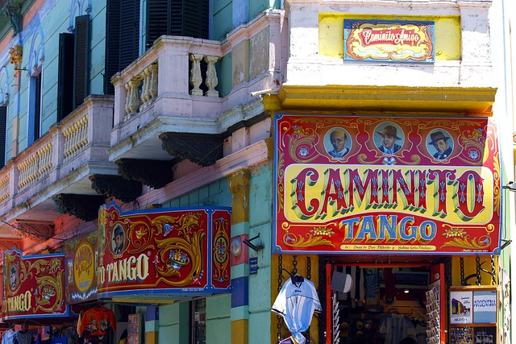

¡Vamos! --- ¡Vamos! --- ¡Vamos! ---
Entdecken Sie das beeindruckende Teatro Colón in Buenos Aires, eines der renommiertesten Opernhäuser Lateinamerikas. Es wurde am 25. Mai 1908 mit der Oper Aida von Giuseppe Verdi eröffnet. Erleben Sie erstklassige Aufführungen in einem prachtvollen Gebäude mit 2500 Plätzen. Das Theater bietet vielfältige Konzerte, Ballett und eine exzellente Ausbildung für den künstlerischen Nachwuchs. Nach umfangreicher Renovierung ist es seit 2010 wieder für Besucher geöffnet.

click: A guided tour of the theater (in Spanish)
click: Short view into the TEATRO COLON - only 2 min.
click: I want to see more of the rest of Argentina.
There is always a lot going on in
Buenos Aires

click: Buenos Aires TRAVEL GUIDE for First Timers - 10 min.
click: Buenos Aires 2 hrs WALKING TOUR, no comments
click: Buenos Aires 2 hrs WALKING TOUR, no comments